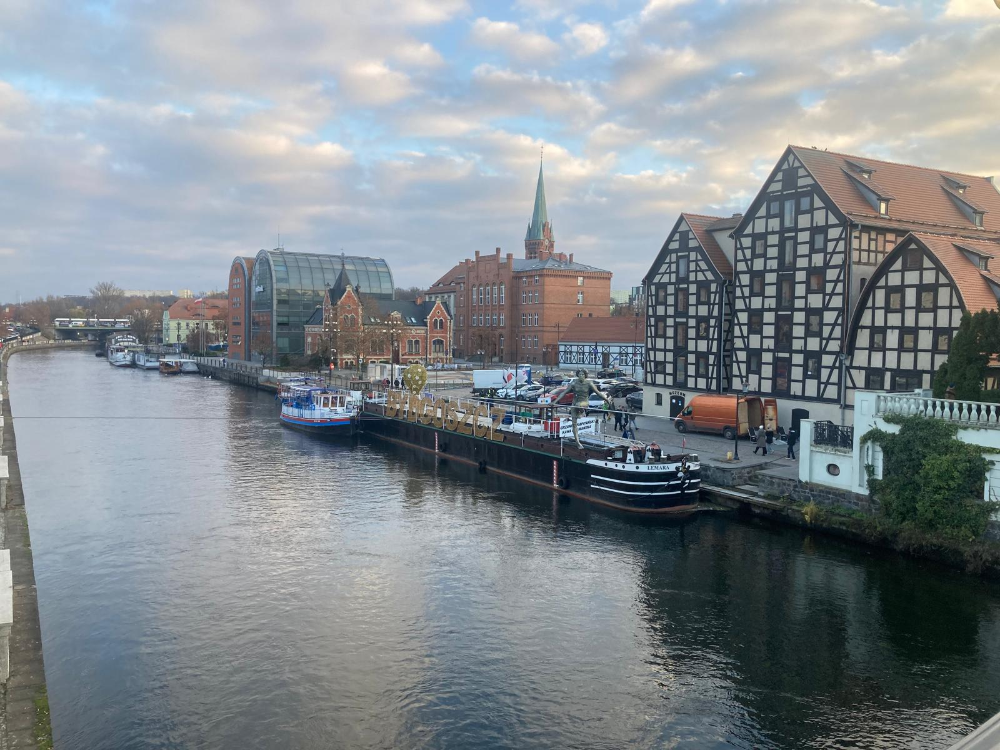
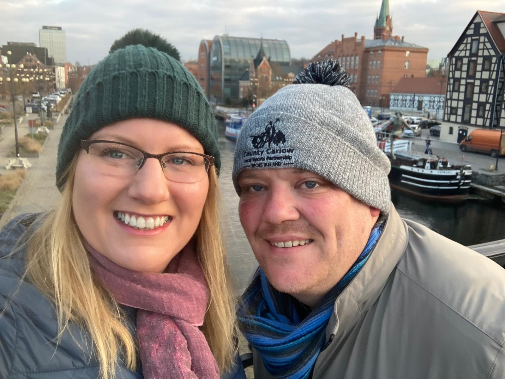
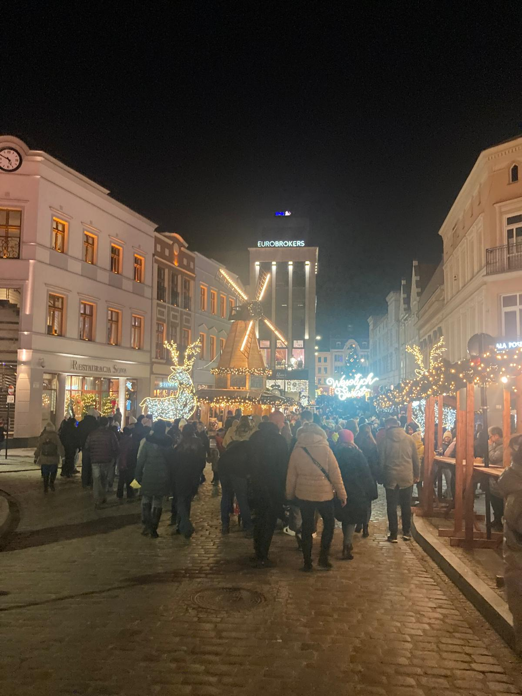
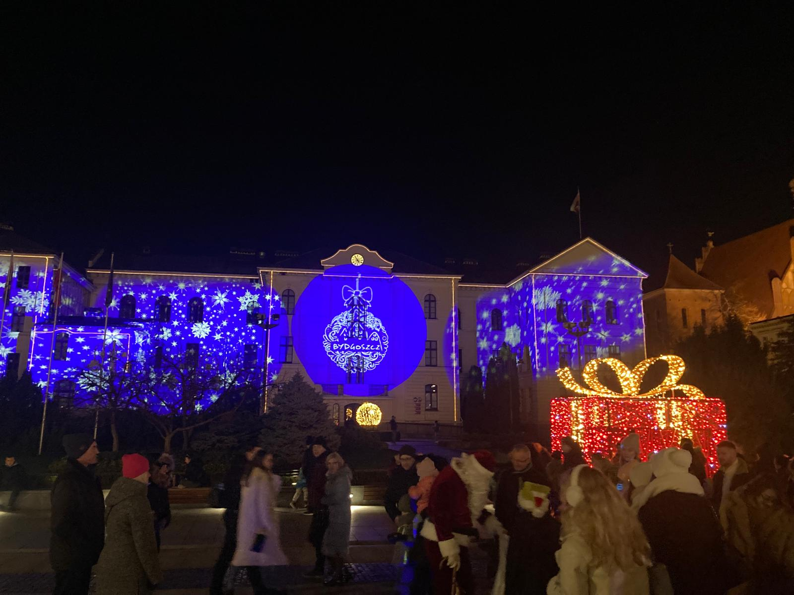
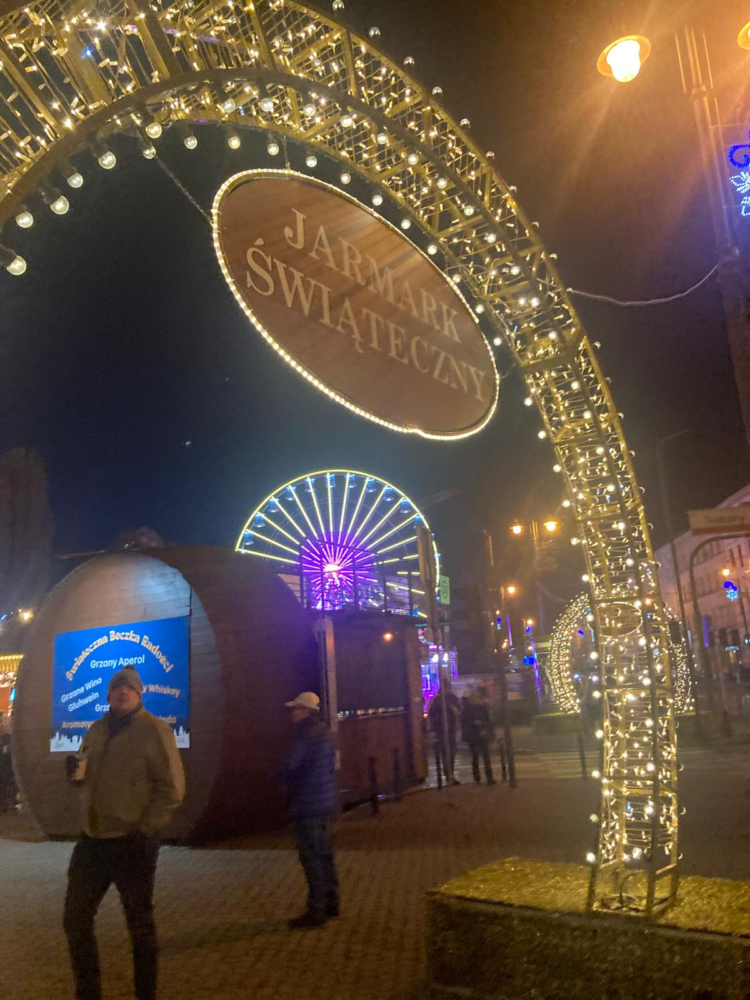
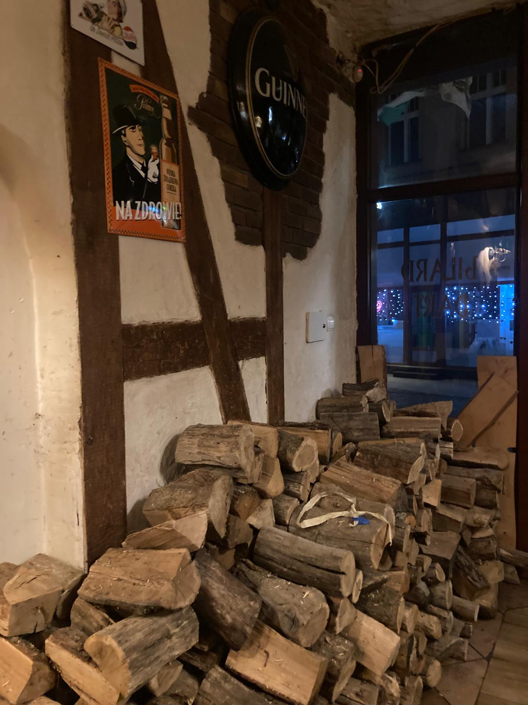

Most people have never heard of Bydgoszcz — and that is exactly what makes it so special. We headed to this beautiful Polish city in December 2024 for the Christmas markets and came home absolutely smitten. Glühwein on the Friday night, a full day exploring the stunning markets and Mill Island on Saturday, great food and drink throughout — and some wonderfully friendly locals who took us under their wing and showed us the best the city has to offer. Bydgoszcz is a gem. Tell your friends.
What this trip gave us:
The story
We headed to Bydgoszcz in December 2024 with a friend — and from the moment we arrived, the city had us. While everyone else was heading to Kraków or Warsaw for the Christmas markets, we had stumbled on something a little more special — a city that felt entirely its own, entirely authentic and entirely brilliant.
Friday evening was spent exactly as it should be — glühwein in hand, wandering the market stalls as the city glittered around us. The Christmas lights in Bydgoszcz are genuinely stunning — the blue arches and illuminated Mill Island along the Brda river create an atmosphere that is hard to put into words.
Saturday was a full day of exploring — the markets, the beautiful waterfront, the Old Town and Mill Island, which is one of the most picturesque spots we have come across anywhere in Poland. We wined and dined brilliantly, spending very little by Western European standards.
The highlight of the whole trip? Meeting some locals who took a shine to us and proceeded to show us the best of Bydgoszcz's nightlife — spots we would never have found on our own. That kind of spontaneous, warm hospitality is something you cannot plan and cannot put a price on. It made the trip genuinely unforgettable.
We flew home on Sunday already talking about coming back. Bydgoszcz — you are very much on our list.
Beautiful, authentic and wonderfully un-touristy. The markets feel genuinely festive rather than commercial — exactly what a Christmas market should be.
One of the most picturesque spots in Poland — a historic island in the middle of the Brda river, lined with old mill buildings and absolutely magical when lit up at Christmas.
The blue light arches and illuminated waterfront are genuinely spectacular — some of the best Christmas lighting we have seen in any European city.
Warming glühwein at the market stalls, hearty Polish food and great restaurants at prices that make you feel like you are getting away with something. Brilliant value.
A surprisingly vibrant nightlife scene — and having locals show us around made it even better. Bydgoszcz knows how to have a good time after dark.
Warm, generous and genuinely welcoming — the locals we met made this trip something really special. Polish hospitality at its very best.
From the beautiful Mill Island waterfront and the stunning Christmas lights to the market atmosphere and the people who made it so special.






Watch our reel
Bydgoszcz is full of brilliant spots that most visitors never find — watch our reel for the hidden gems that made our trip so special. From tucked-away bars to the most beautiful corners of the city, this is Bydgoszcz beyond the obvious.
The hidden gems of Bydgoszcz 💙
Bydgoszcz is brilliantly easy to visit independently — but if you want to see more of Poland, TourRadar's classic Poland tour is a fantastic way to do it.
No organised tour currently goes directly to Bydgoszcz — which is part of what makes it feel so special and undiscovered. It is easy to reach by direct flight from Ireland and well worth combining with a wider Poland trip taking in Kraków, Warsaw and beyond.
Disclosure: This is an affiliate link. If you book through it we may earn a small commission at no extra cost to you.
From city walking tours and Christmas market experiences to day trips and hidden gem tours — browse Bydgoszcz activities here:
Disclosure: If you book through these links we may earn a small commission at no extra cost to you.
Common questions
What to pack for Bydgoszcz in winter
Bydgoszcz in December is very cold — temperatures around 0°C or below, with wind chill making it feel even colder. Wrap up properly and you will have an amazing time. These are the things we would not leave home without.
The single best thing you can do for a winter market trip. A good thermal base layer under your clothes makes a huge difference when you are outside for hours in the cold.
View on Amazon →Cobbled streets can be icy and wet in December. Warm, waterproof boots with a good grip are essential — your feet will thank you after a full day out at the markets.
View on Amazon →Your hands and head lose heat fast in the Polish winter. Thick gloves and a proper warm hat are non-negotiable — especially for evening market visits.
View on Amazon →Cold weather kills phone batteries incredibly fast. Keep a power bank in an inside pocket — it will stay warmer and last longer, keeping you connected all day.
View on Amazon →Handy for maps, bookings and staying connected without roaming charges — especially useful for finding those hidden gems around the city.
View on Amazon →Poland uses Type C and E plugs — different to Ireland. Don't arrive on a cold December evening with nothing charged after your flight.
View on Amazon →Useful for carrying extra layers, a water bottle and any market purchases. Keep it light so it does not slow you down on a full day exploring.
View on Amazon →Always worth having on any trip away — for blisters, headaches and the little things that are annoying to sort out when you are in an unfamiliar city.
View on Amazon →Disclosure: These are Amazon affiliate links. If you buy through them we may earn a small commission at no extra cost to you. These are all things we'd genuinely pack for a winter trip to Bydgoszcz.
Bydgoszcz is one of Europe's most underrated Christmas destinations — beautiful, affordable, friendly and completely off the tourist trail. Book your flights, wrap up warm and go. You will wonder why you have never been before.
Affiliate disclosure: if you book through our links we may earn a small commission at no cost to you. We only recommend trips and experiences we'd be happy to stand over.